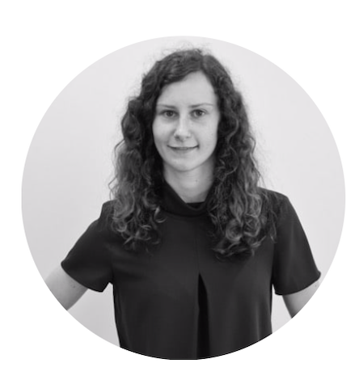
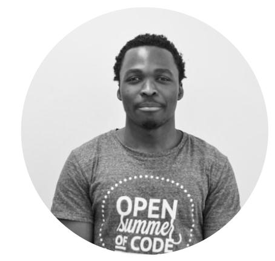
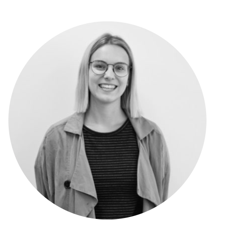

Cycling Up
Cycling Up shows the evolution of the bicycle infrastructure in Brussels.
Through interactive maps, graphics and facts, Cycling Up demonstrates a wide range of past and present data on the Brussels bike network.
The project
Cycling Up is a project requested by Brussels Mobility consisting in creating an online dashboard that evaluates the bicycle infrastructure of Brussels. Through interactive maps, graphics and facts, Cycling Up demonstrates a wide range of past and present data on the Brussels bike network. This project is part of oSoc 4-week summer programme.
History of the GFR*
The total amount of infrastructure is calculated in kilometers and includes the ones separated from the main roads as well as the suggested paths and the Regional Cyclable Routes (RCR), better know as the GFR network. The RCRs are suggested paths for cyclists willing to commute on a medium to long distance. The data that is available is from 1998 until 2014.
*Gewestelijke Fietsroutes
Brussels infrastructure
The evolution of the number of cyclists variates according to the seasons. They are defined by the following months: January, May, September and November. This graph depicts the gap between each seasons from 1998 till 2017. Each data represents the number of cyclists taken randomnly at a t-point. None of these should be taken as granted and considered as absolute data.
Services by Brussels Mobility
Moving around in Brussels. If you want to go to work, just take a walk or take a step into the world at night, discover all the possibilities for being mobile in the region. On foot Bike Persons with reduced mobility Electric steps and the other micro-mobility vehicles public transport, train, cab, coaches, car & moto.


oSoc19
oSoc provides Belgian based students the training, network and support necessary to transform open innovation projects into powerful real-world services. Hence, Cycling Up team was composed of five students and two coaches. All of them contributed to the project accordingly to their background: front-end, back-end and product development. Furthermore, the project was achieved in close relation with Brussels Mobility.
The team
-

Danielle Terras
Digital Designer &
Front-end Developer -

Cécile Diana
Product Developer
-

Chloë Devriese
Front-end Developer
-
Joren 's Jongers
Back-end Developer
-

David Adegnon
Full Stack Developer
-

Eva Jacobs
Design Coach
-
Jonathan Beliën
Development Coach
Our partners
-
Brussels Mobility
Brussels Mobility is responsible for the equipment, infrastructure and mobility issues in the city of Brussels. Their primary challenge is to facilitate economic development –and the growing need for mobility solutions – while improving quality of life and sustainable development.